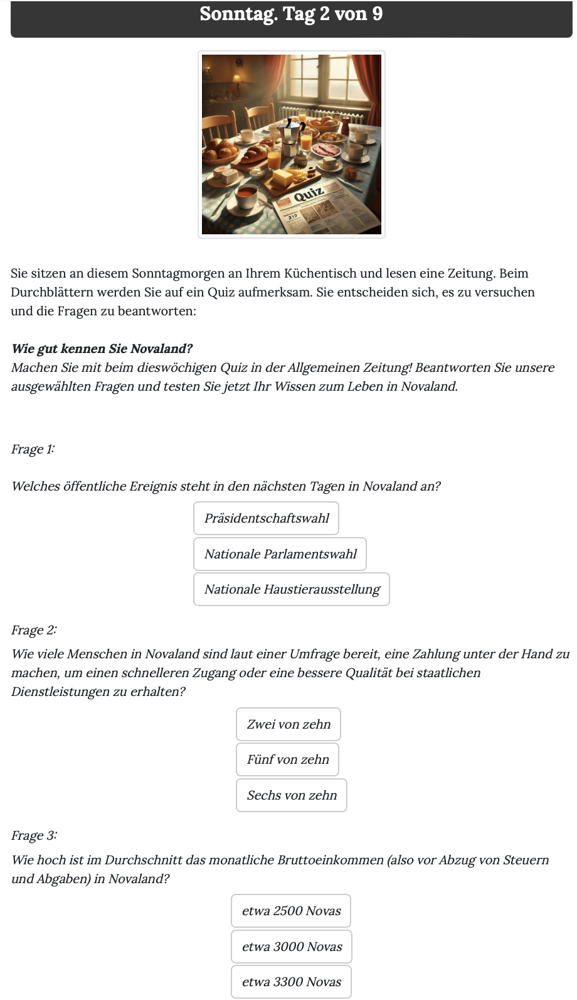

The newspaper quiz pages¶
The Quiz was used to both test participants’ attention, to check if they understood the information provided on the previous pages, and to distract them from the main purpose of the questionnaire by making this check an in-experience situation. The quiz was presented as a news quiz about Novaland, which participants had to answer correctly in order to continue with the questionnaire. The quiz was displayed in the second round of the main app, after the first smokescreen and before the first vignette.
This page is implemented in the Quiz page class.. The quiz consists of two questions, which are defined as form_fields in the page class. The questions are: First, quiz_event, asking which public event is scheduled in the next days in Novaland.The correct answer was the national election. And second, quiz_income, asking about the average income in Novaland. The correct answer being 3000 Nova Dollars.
Those participants who received the information about the social norm of bribing in Novaland on the previous pages were also asked a third question, quiz_corr, asking how many citizens of Novaland were willing to pay a bribe for a service. The correct answer was 6 out of 10 citizens. This is done by using two pieces of code. In the get_form_fields method, we check whether the participant received the information about the social norm of bribing in Novaland. If they did, we add the third question to the list of form fields that are displayed on the page. This is done by checking the corruption_info variable in the Participant object, which is set to 1 if participants received the information and 0 if they did not.
In the page’s HTML template, we then check whether the corruption_info variable is set to 1. If it is, we display the third question. This is done using the conditional statement {{ if corruption_info == 1 }} {{ formfield player.quiz_corr }}.
This is what the layout of the quiz page looks like:
{kind=link}
Note that the second question is displayed only if the participant received the information about the social norm of bribing in Novaland. If they did not, only the first and the third question are displayed.
After participants submitted their answers, some calculations were automatically conducted by oTree to analyse the quiz results. Within the page class, the before_next_page function is used to calculate the number of correct answers and whether the participant answered all questions correctly. This is done by comparing the participants’ answers with the correct answers defined in the quiz_correspondence dictionary, which contains the correct answers for each question.
1def before_next_page(player, timeout_happened):
2 fields = Quiz.get_form_fields(player) # get questions
3 correct_answers = {k: quiz_correspondence[k] for k in fields} # compare answers with correct answers defined in the quiz_correspondence dictionary
4 answers = {k: getattr(player, k) for k in fields} # get participants' answers
5 are_answers_correct = [answers[k] == correct_answers[k] for k in fields] # check if answers are correct
6 player.quiz_correct_answers = sum(are_answers_correct) # calculate number of correct answers
7 player.quiz_num_questions = len(fields) # calculate number of questions
8 player.quiz_fully_correct = all(are_answers_correct) # check if all answers are correct
After the quiz page, participants saw the QuizResults page. On this page, they were informed about the correct answers to the quiz questions. Again, we used the corruption_info variable to determine whether the third question was displayed. If it was, the correct answer to this question was also displayed on the page. After the participants submitted the page, they were redirected to the first vignette page.